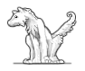
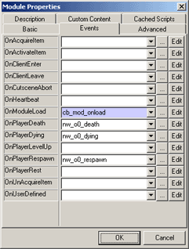
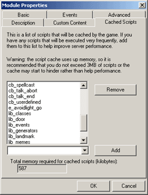
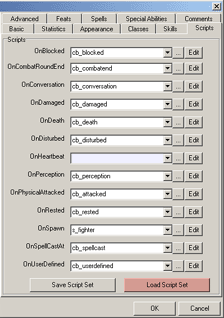
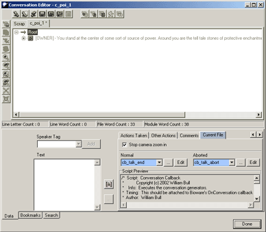

What is it?
Getting Help
Start a New Module
Adding the Toolkit to an Exitising Module
Setting Up Memetic NPCs
Setting Up Conversations
Breakdown of Scripts
The MemeticAI Toolkit (MT) is a set of scripts (and a few object blueprints) used to make realistic NPCs and NPC behavior classes. These "memetic NPCs" can be easily configured by a builder and extremely customized by a developer. The MT project has been designed to promote the assembly of modular NPC behaviors, without a lot of complicated scripting. Builders can change an NPC's behavior by adding them to a behavior class, or by adjusting some variables directly on the NPC, via Bioware's Toolkit.
When the MT scripts have been added to your module, you will have a complete replacement of an NPC's callback scripts, plus a large collection of generally useful NWScript functions. You can then import memetic NPCs from the MT website (http://www.memeticai.org/) or follow the tutorials to build your own memetic NPCs from scratch.
The MT project has documentation for builders and developers. Separate documentation for all of the MT NWScript functions can be found on the Memetic Website or via the Memetic version of the NWNLexicon (http://www.nwnlexicon.com/).
We understand that it's hard to get started using someone else's code and would like help you out. The development team can help you get through the installation of the MT scripts and can be reached online:
| Chat Online server: irc.nwconnections.com channel: #meme |
The fastest way to start a MemeticAI Toolkit (MT) project is to download a base module from the MT website . This module will have scripts to the module's callback dialog and will have one area called "Meme Vault". This is a dummy area used by the MT scripts to store temporary objects.
|
|
Each time you add a new area to your module you will need to add the scripts cb_area_enter and cb_area_exit to the respective area callbacks. You can find this in the EditArea Properties menu. |
Once you have the base module, you are ready to begin developing with the MT scripts. You may want to download a prewritten Memetic NPC or follow through a tutorial. There are many basic tutorials that will show you how to have your NPCs react to players, perform idle animations, and navigate your module using trails and landmarks.
Adding the MT scripts to your module may involve a bit work, depending on how far you've developed your module:
Module Startup ScriptThere is a small amount of setup to be done when a module starts up. To do this, the script, cb_mod_onload, needs to be added to the OnModuleLoad module event. Within this script a number of things are done:
|
Script CachingBioware has recently introduced a new feature - script caching. This is a highly recommend feature that greatly improves the performance of the MT scripts. To enable script caching you will need to add each script that you want cached. If you are using a premade memetic module these scripts will already be setup. If you are using an ERF you will need to add the all the default memetic scripts that are frequently called. It is generally recommended that you add each file with the prefix cb_ and lib_. These are the callback scripts and the libraries with the memetic functions that frequently called. As you write your own libraries with your memetic functions and objects, remember to add these to this panel. |
Setting Up a Memetic NPCOnce you have installed the MT scripts, you can either download a premade NPC from the memetic website or create your own. If you're going to create you own NPCs you will need to start by setting up their callback scripts. Every NPC needs to have its callbacks replaced with memetic callbacks. These memetic versions all have the prefix cb_. They have very little code inside them. It is there job to call functions inside of your libraries. Since there are several callbacks, it may be tedious to setup a memetic NPC. Instead, you may want to download the Memetic Callback Script Templates. These are premade sets of callbacks that can be attached by clicking the "Load Script Set" button. If you are going to create NPCs without templating them, this is very handy. Memetic NPCs do not require a heartbeat script. In fact it is recommended that you don't attach cb_heartbeat. But also bear in mind that some day you may add a "behaviour generator" that requires a heartbeat callback. At this time, the toolkit does not ship with any of these and it's probably best just to leave it out. This will give you a performance increase. Once you have done this you should go to the tutorial documentation and follow one of the basic tutorials. |
You must do a small amount of work to allow your Memetic NPCs to handle conversations properly without the use of a heartbeat script. Unfortunately there is no way around this, otherwise your NPC will not resume his behavior once a conversation ends. When a conversation ends normally you should call cb_talk_end. If the user aborts the conversation you should call cb_talk_abort. You can find these fields in the conversation dialog, at the bottom right hand panel in the "Current File" tab:

Header Filesh_ai h_class
h_debug
This contains the code to write XML debug statements to your log file. h_event h_library h_list h_poi h_respose h_time h_util h_landmark h_util_combat |
Librarieslib_ambient lib_avoidlight lib_classes lib_combat lib_converse lib_door lib_events lib_generators lib_landmark lib_movement lib_memes lib_mimic lib_observer |
Callbackscb_mod_onload cb_area_enter cb_attacked cb_item_drop cb_poi_enter cb_talk_abort Conversation Conditionalssc_false |